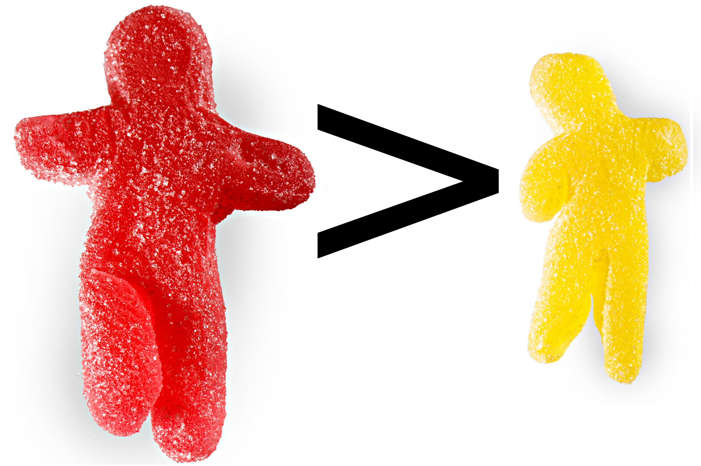
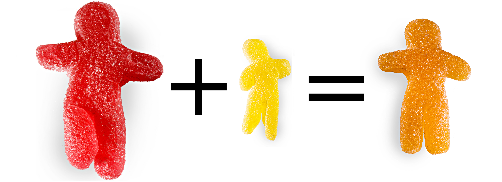
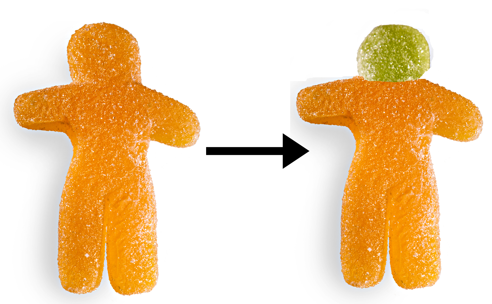

Evolusjonsalgoritmer
Optimering ved mekanisker inspirert av biologisk evolusjon
Jørgen Høgberget
Ønsket tidlig å bli rockestjerne, forelsket meg i programmering via fysikkstudie.
Hovedidèen
En populasjon som undergår...
- Seleksjon
- Reproduksjon
- Mutasjon
Populasjonen
Består av en mengde individer, hvor et individ representerer en komplett mulig løsning på problemet.
Seleksjon
For å kunne velge det beste individet må vi kunne måle hvor bra det presterer. Dette gjøres ved bruk av en fit-funksjon.
Reproduksjon
Individene som scorer best får reprodusere seg mer.
To individer kombineres til et nytt ved midling.
Et individ med lav score erstattes av det nye individet.
Mutasjon
For å kunne introdusere nye løsninger så vil alle avkom bli gitt en tilfeldig mutasjon.
Abstrakt implementasjon
abstract class Population (sizec: Int) {
val size = sizec
def calculateFit(id: Int) : Float
def mutateIndividual(id: Int) : Unit
def generateOffspring(idFirstParent: Int, idSecondParent: Int,
idChild: Int) : Unit
...
}
Implementasjon av evolusjon
def evolve(dumpInterval: Int = 10, nMax: Int = 10000,
convErr: Float = 1e-3f) : Int = {
val sortedIds = Array.range(0, size)
val fits = Array.tabulate(size)(n => calculateFit(n))
inplaceSort(sortedIds, fits)
var n = 0
while (fits(sortedIds(0)) > convErr & n < nMax) {
//we let the winner generate offsprings with the rest of the
//best half. The bottom half is replaced by these.
for (i <- Range(1, size/2)) {
val child = sortedIds(size - i)
generateOffspring(sortedIds(0), sortedIds(i), child)
mutateIndividual(child)
fits(child) = calculateFit(child)
}
inplaceSort(sortedIds, fits)
n += 1
}
sortedIds(0)
}
Eksempel: Fourier-transformer

Enhver funksjon kan spaltes opp i delbølger.
Eksempel: Fourier-transformer
- Et individ er en spesifikk sammensetning av bølger.
- Fit-funksjonen er avstanden mellom løsningen produsert av individet og den eksakte funksjonen.
- Reproduksjon skjer ved midling over foreldrenes bølger.
- Mutasjon skjer ved en tilfeldig endring i en tilfeldig bølge.
Verifisering

Et inputsignal er konstruert av harmoniske bølger.
Ildprøve

Et ikke-periodisk skarpt signal krever enormt mange bølger. Her: 10.
Ildprøve

Samme som før bare med dobbelt så mange bølger.
Implementasjon av fit-funksjon
final override def calculateFit (id: Int) : Float = {
(targetValues, calculateFourierFunction(id)).zipped
.map((f, g) => (f-g)*(f-g)).sum/targetValues.size
}
def calculateFourierFunction(id: Int) : List[Float] = {
(cosines, sines).zipped.map((c, s) =>
a0(id) + fourierElement(cosineCoeffs(id), c) + fourierElement(sineCoeffs(id), s))
}
def fourierElement(coeffs: Array[Float], trigioms: List[Float]) : Float = {
(coeffs, trigioms).zipped.map(_ * _).sum
}
Implementasjon av reproduksjon
final override def generateOffspring (idParent1: Int, idParent2: Int, idChild: Int) : Unit = {
a0(idChild) = (a0(idParent1) + a0(idParent2))/2
mixParents(sineCoeffs, idParent1, idParent2, idChild)
mixParents(cosineCoeffs, idParent1, idParent2, idChild)
}
//50-50 mix of each parent
def mixParents(coeffs: List[Array[Float]], idFirstParent: Int,
idSecondParent: Int, idChild: Int) : Unit = {
(coeffs(idFirstParent), coeffs(idSecondParent), Range(0, ncoeffs))
.zipped.foreach((s1, s2, i) => coeffs(idChild)(i) = (s1+s2)/2)
}
Implementasjon av mutasjon
final override def mutateIndividual (id: Int) : Unit = {
val coefficient = floor((2*ncoeffs+1)*Random.nextFloat()).toInt
val changeFactor = 1.0f + Random.nextGaussian().toFloat
if (coefficient == 0) {
a0(id) = mutateSingle(a0(id), changeFactor)
}
else if (coefficient > ncoeffs) {
val relCoeff = coefficient - ncoeffs - 1
val coeff = cosineCoeffs(id)(relCoeff)
cosineCoeffs(id)(relCoeff) = mutateSingle(coeff, changeFactor)
}
else {
val relCoeff = coefficient - 1
val coeff = sineCoeffs(id)(relCoeff)
sineCoeffs(id)(relCoeff) = mutateSingle(coeff, changeFactor)
}
}
def mutateSingle(coeff: Float, changeFactor: Float) : Float = {
changeFactor*coeff
}